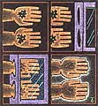

TO YOUR HEALTH
Pills to stop smokers, IQ supplement tablets, gene therapy and more.
When it concerns the fitness of body, mind or spirit, the editors of American Health are there, staying on top of up-to-date medical research, separating fad from fact and helping you preserve and improve life's most precious gift-your good health. Here are just a few items culled from recent and upcoming issues, including the possibility of a dynamic new vegetable variety.
High-Tech Hand Washer
A futuristic device originally designed to scrub surgeons' hands is now being tested on fast-food cooks and even gooey day-care children.
It's like something from "The Jetsons": Just poke your arms through the gadget's two holes, then step on a pedal. Automatically, splash guards inflate, sealing in hands and forearms as oscillating jets spray an antimicrobial cleansing solution. Release the pedal and the guards deflate.
One version, the Insta-Clens ($1,750 from Pacific Biosystems), has been tested in a Phoenix day-care center where "the kids were a little scared of it at first, but by day two they couldn't keep their hands off it." The machine promises to do more than just keep kids tidy. Teaching tykes clean habits could cut many day-care-spread infections, including some that cause infant diarrhea. Insta-Clens is also being tested in the kitchens of two Phoenix fast-food restaurants.Getting kitchen help to wash their hands is vital: Hepatitis, salmonella and staphylococcus can all be transmitted by unclean cooks.
The original operating-room model, called Stat Scrub ($19,500), has been tested at a Phoenix hospital. According to one study, the 90-second wash got hands 65% cleaner than surgeons' usual 10-minute pre-op scrub. A smaller version, Medi-Clens, is being used at a neonatal intensive care unit. Though it doesn't provide the immaculate scrub that surgeons require, it may surffice for between patient contacts. Ideally, there would be such a machine in every patient's hospital room, but at $2,950 each, Medi-Clens units probably would be scattered along corridors.
Anything that reminds hands-on care givers to wash up between visits is potentially very important. Studies show that forgetful doctors frequently carry germs from patient to patient. And in a study of 400 fourth-year med students at five northeastern medical colleges, up to 96% didn't wash their hands between simulated doctor-patient examinations.
Cold-Blooded Women For many people, particularly women, even a slightly cool environment can be a chilling experience. They get cold quickly and warm up slowly. One reason may be that they're iron deficient. In a Penn State University study, when both anemic and nonanemic women were submerged up to their necks in water that was slightly cooler than body temperature, the iron-deficient women weren't able to cope well with the temperature change. After 100 minutes, they were using less oxygen, which translates into less body heat, and producing less thyroid hormone, which is one of the body's temperature regulators. They also had lower core body temperatures. When the test was repeated after 12 weeks of iron supplementation, the anemic women showed normal temperature control.
Considering that over 30% of all women aged 11 to 50 consume less than the recommended 18 milligrams of iron every day, it's believed that cold intolerance is a common problem for females. Yet, a physician can take a simple blood test to determine anemia-and advise whether iron supplements are a good idea. Iron is also found in such foods as lean steak, poultry (dark meat), shellfish (especially clams, oysters and mussels), tuna (dark meat) and beans. Drinking orange juice and eating vitamin C-Rich foods with meals enhances iron absorption.
Can vitamin pills actually increase human intelligence?
Smarts in a Bottle
In England, sales of vitamins and minerals soared after the BBC reported on a study indicating that vitamin and mineral supplements might raise the IQ. The study, published in the British medical journal The Lancet , found that supplemented children performed better on nonverbal intelligence tests-tasks such as matching colored blocks to a preset pattern. Researchers believe that nonverbal IQ is a more innate, biological measure than verbal IQ, which depends more on formal learning and language.
Therefore, nutrition would be expected to affect nonverbal results before changes could show up on verbal tests. Though relatively few children in the U.S. or Britain have marked nutritional deficiencies, many do consume diets that are low in iron and zinc, both of which are important to brain cell production. A recent study has also implicated zinc deficiency as a risk factor in dyslexia. The B vitamins support brain function, too-and may be low in some kids' diets.
A Carotene Cauliflower
A small, mutant, orange cauliflower head found in a field near Toronto may be the source of a new cauliflower variety rich in vitamin A. Cornell University scientists are currently crossing the cultivar-which gets its orange color from carotene, as do carrots and pumpkins-with standard varieties, to create a variety suitable for farming. Cauliflower, a member of the reputedly cancer preventive cruciferous family, is already high in fiber, vitamin C and potassium.
At-Home Cholesterol Tests?
If you think cholesterol consciousness is at an all-time high, just wait until the first at home cholesterol tests hit drugstore shelves. Home Diagnostics (Eden town, New Jersey) is ready now with an easy-to-use finger-stick kit (pending FDA approval), and Keystone Medical Corporation (Columbia, Maryland) will seek an OK from the FDA in the fall. Chem-Elec (North Webster, Indiana), whose Clinicard won FDA approval in June as the first self-processing doctor's office screening test, will probably join the over-the-counter bandwagon, too.
Sounds convenient, but what about accuracy? The Clinicard doesn't give results exact enough for a doctor's diagnosis, says the FDA. It does, however, give readings within three ranges: below 200 mg/dl (desirable level), 200 to 300 (borderline to high), and above. (The cards show 25 mg/dl gradations.) Manufacturers say the home kits are only screening devices, and not meant to replace lab tests (which are deemed "accurate" if they're within 150% of the true reading).
Gene-Therapy Taboos
Gene-Therapy Taboos Long ago, gene doctors agreed that gene therapy on fertilized eggs and embryos was off limits as far as humans are concerned. Reason: Once a gene is inserted into a fertilized egg, it becomes incorporated into every cell -including the sex cells. And that means the extra gene would be passed on to all future progeny-even offspring that don't need it. (Sanctioned gene-therapy would always target specific tissue to eliminate any and all possibilities of novel genes being passed on to future generations.)
Even though animal studies suggest that doctors could, for example, eventually wipe out insulin-dependent (type I) diabetes by inserting an insulin-producing gene in embryos, scientists worldwide have agreed not to try. The risk of mucking up the human gene pool is simply too high.
Another gene-therapy taboo is "eugenic" genetic engineering. That line of research would involve genetically altering such traits as intelligence, personality and organ formation. But rest assured, says a National Academy of Sciences report, these traits are controlled by hundreds, perhaps thousands, of interacting genes. "The genes involved have not been identified. Furthermore, scientists do not have the tools to manipulate these complex traits, and do not expect to have them in the foreseeable future."
|
 |
|
|